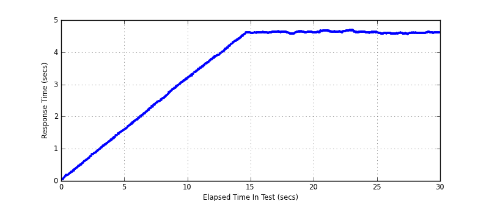
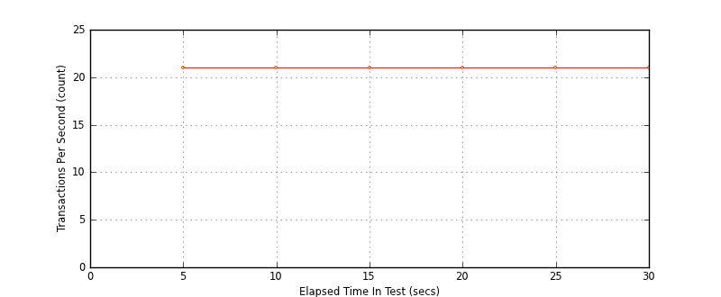
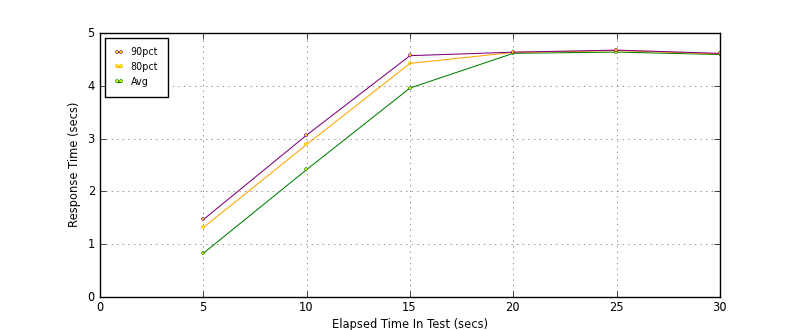

Performance Results Report
Summary
transactions: 745
errors: 0
run time: 30 secs
rampup: 10 secs
test start: 2014-01-15 20:28:15
test finish: 2014-01-15 20:28:44
time-series interval: 5 secs
workload configuration:
| group name | threads | script name |
|---|
| user_group-1 | 100 | read_user.py |
All Transactions
Transaction Response Summary (secs)
| count | min | avg | 80pct | 90pct | 95pct | max | stdev |
|---|
| 745 | 0.044 | 3.514 | 4.622 | 4.635 | 4.652 | 4.684 | 1.464 |
Interval Details (secs)
| interval | count | rate | min | avg | 80pct | 90pct | 95pct | max | stdev |
|---|
| 1 | 107 | 21.40 | 0.044 | 0.828 | 1.315 | 1.466 | 1.538 | 1.600 | 0.461 |
| 2 | 106 | 21.20 | 1.622 | 2.414 | 2.889 | 3.067 | 3.120 | 3.202 | 0.468 |
| 3 | 109 | 21.80 | 3.204 | 3.958 | 4.425 | 4.571 | 4.611 | 4.619 | 0.432 |
| 4 | 108 | 21.60 | 4.570 | 4.616 | 4.633 | 4.637 | 4.640 | 4.648 | 0.018 |
| 5 | 108 | 21.60 | 4.599 | 4.639 | 4.666 | 4.676 | 4.677 | 4.684 | 0.023 |
| 6 | 107 | 21.40 | 4.564 | 4.592 | 4.607 | 4.615 | 4.617 | 4.632 | 0.015 |
Graphs
Response Time: 5 sec time-series
Response Time: raw data (all points)

Throughput: 5 sec time-series

Custom Timer: get_tweets
Timer Summary (secs)
| count | min | avg | 80pct | 90pct | 95pct | max | stdev |
|---|
| 645 | 0.044 | 3.514 | 4.621 | 4.634 | 4.652 | 4.684 | 1.464 |
Interval Details (secs)
| interval | count | rate | min | avg | 80pct | 90pct | 95pct | max | stdev |
|---|
| 1 | 107 | 21.40 | 0.044 | 0.827 | 1.315 | 1.465 | 1.538 | 1.599 | 0.461 |
| 2 | 106 | 21.20 | 1.622 | 2.413 | 2.889 | 3.067 | 3.120 | 3.202 | 0.468 |
| 3 | 109 | 21.80 | 3.204 | 3.958 | 4.424 | 4.571 | 4.611 | 4.619 | 0.432 |
| 4 | 108 | 21.60 | 4.570 | 4.615 | 4.632 | 4.637 | 4.640 | 4.648 | 0.018 |
| 5 | 108 | 21.60 | 4.599 | 4.639 | 4.666 | 4.676 | 4.677 | 4.684 | 0.023 |
| 6 | 107 | 21.40 | 4.564 | 4.592 | 4.607 | 4.614 | 4.617 | 4.631 | 0.015 |
Graphs
Response Time: 5 sec time-series

Response Time: raw data (all points)
Throughput: 5 sec time-series